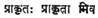

ANASUYA’S WRATH
Verses 273-282 from Yuddhakaanda Upasamharana Khandamu of
Srimad Raamaayana Kalpavrikshamu of
Sri
Viswanatha Satyanarayana, rendered into English by
PROF.
K. VISWANATHAM, M. A.
Head
of the Dept. of English,
It
is to state the obvious that Sri V. Satyanarayana is the doyen of modern Telugu
writers and Srimad Raamaayana
Kalpavrikshamu the tallest tree in the garden of
Telugu poesy. The prophetic significance of the title of the Kavya is realized in the Jnanpith
Award. The title retains its mythical virtue. The Kavya
is a Kalpavriksha literally and figuratively,
materially and belletristically. This portion
translated into English from the Yuddha Upasamharana of the poet’s magnum opus is one of the
chef d’oeuvre. The verses come home to the bosoms and business of women,
especially. They show the keen insight of the poet into the workings of a
woman’s heart hurt by scandal, the workings of a woman’s heart blazing in anger
at the suffering of another woman. A woman’s heart is known only to another
woman as the peaks are known only to the stars. A woman in a hermitage
understands a woman in a Pushpaka; both are women.
Aged feminity understands youthful brow stained by
scandal. A woman sympathizing with another cuts a
man–a man like Rama–to size by ignoring him. The
Importance of Rama, in
Anasuya’s eyes, is that he is the husband of Sita:
indifference is worse than contempt. Even Rama is too small to be noticed by Anasuya because he has hurt Sita. This potion is an
excellent elaboration of Valmiki’s: 
Sita’s character is pitched
high to its becoming loftiness in later verses: 300-301 in which Sita tells her
lord that she too was frightened by what Anasuyadevi
might say in anger against Rama because any indictment of Rama is an indictment
of Sita too, as Rama and Sita are an indivisible One. A woman’s heart does not
forget a wife’s duty: 
273. As the Pushpaka was flying sidelong, the daughter of addressed Rama: ‘O Lord, the hermitage of Atri is yonder. What do you say? Going there will happy your mind and Anasuyadevi gets the opportunity of seeing you.’ ‘Be it so’, said Rama and the Pushpaka digressed from the aerial path.
274.
That was a humble hermitage. Crores of Rakshasas and Monkeys arrived there. The sage was the very
personification of extreme old age. There was the sage’s wife with eyelids half-drooping and body numbed by age. Greeting the
arrival of Rama and Sita with their waving hands and fingers it was as if a sea
of crested joy arose.
275.
As Rama and Lakshmana and the monarch of the sages
were together in front of the hermitage, the lovely Sita led Anasuya to a place at a distance bowered by tender jasmine
creepers and massaging her feet spoke soft and respectable words casually.
276.
Mother, when you gave me that boon it seemed gracious of you. The boon of yours
turned out to be a sorrowful story in the long run. My
appearance like that of the Apsara of the Heavens
roused only loathing in my husband’s eyes–at a cursed hour.
277.
Beyond the seas there was the ten-headed Rakshasa, Ravana by name. He may have a hundred heads, let alone ten.
Revered mother, has he a head at all?
278.
Maricha his close counsellor
became a golden deer an unthinkingly I wanted it. The basest of Rakshasas dug a pit and I fell into it. And the ten-headed
one, Mother! haled me up with ropes as one would a
cow, elephant and carried me away. With that began the battalia
of my misfortunes.
279.
With an incredible army formed by the hundreds of thousands of monkeys who got
off the aerial car quickly he crossed the seas and slew the
mighty archer. It seems I stayed for a year in his house. How can I describe
the abuse flung at me? Seas of nausea spilled from him.
280.
Then Anasuya, raising her half-drooping eyelids and
lifting her legs step by step with her bark-garments wavering, walked rapidly
towards Rama and looked at him wrathfully Rama’s mind
was frightened at what the sage’s wife might say.
281.
The sage’s wife, changing her mind, went immediately inside. The sage felt
relieved and spoke to Rama: “Ramachandra! an aged woman, an aged woman! Kshatriyas know what manliness
is. Are women capable of explosive anger? Does a heart abraded by the burden of
anguish look before and after?”
282.
Then all went and got into the aerial car. It was about to start. Rama saw Anasuyadevi walking towards the car and stopped it. Anasuya walked to the car, got up the steps with
difficulty, placed two fruits in Sita’s hands and was
getting down. Sita handed over the fruits to Rama, helped Anasuya
get down the steps and went back, and the aerial car started on its flight.